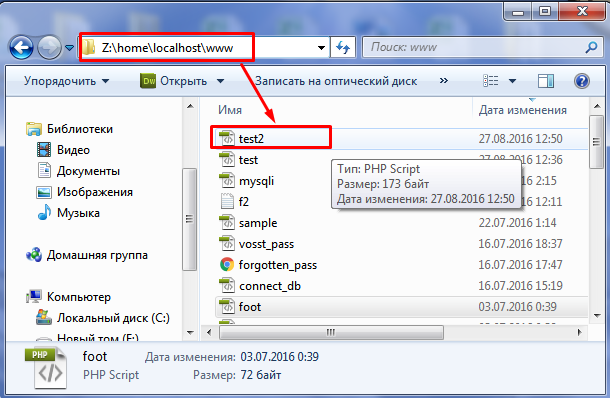
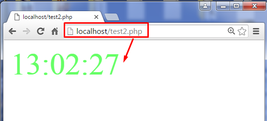
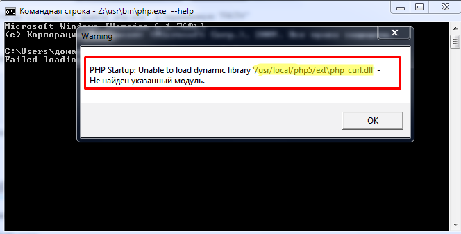
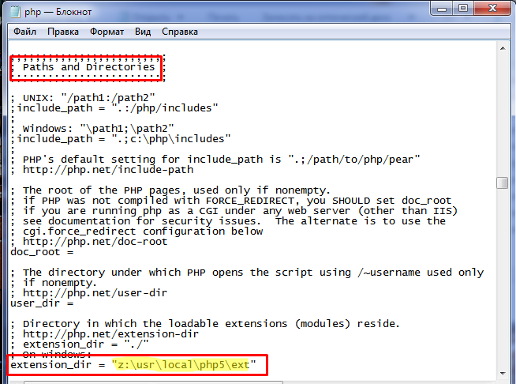
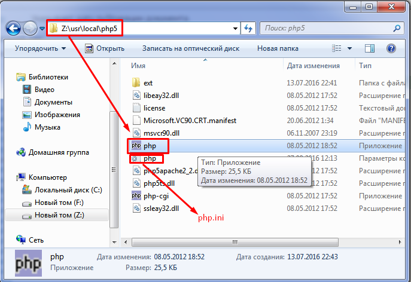
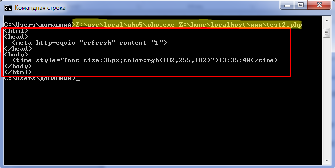
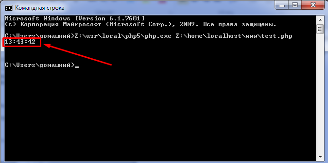

Ловим попутный ветер или как запустить скрипт PHP
Дата публикации: 2016-09-19
От автора: Если вы когда-нибудь запускали воздушного змея, то знаете, что это не так просто, хотя со стороны кажется наоборот. На самом деле нужно приловчиться, чтобы вовремя веревку натянуть или поймать воздушную «волну». Сегодня я расскажу, как запустить скрипт PHP и какие «веревочки» дергать, чтобы он не просто работал, а «летал»!
Как уже не раз упоминалось, PHP – это серверный язык программирования, поэтому сделать так, чтобы результат работы его кода отобразился в браузере, будет немного сложнее. Для этого файл должен располагаться непосредственно на серверном пространстве. Для работы с PHP используются два типа сервера:
Обычный (удаленный) –предоставляется хостером.
Локальный – устанавливается на клиентской машине.
На стороне хостинга, чтобы увидеть результат работы скрипта, в строку браузера вводится адрес следующего формата: ваш_сайт.ru/имя_файла.php
Бесплатный курс по PHP программированию
Освойте курс и узнайте, как создать динамичный сайт на PHP и MySQL с полного нуля, используя модель MVC
В курсе 39 уроков | 15 часов видео | исходники для каждого урока
На локальном сервере все обстоит иначе. Перед тем, как запустим PHP скрипт в браузере, выясним эти особенности.
В зависимости от применяемого сервера набираемый адрес может отличаться. Чаще всего в «наших» краях используются различные сборки с Apache, из которых самой распространенной является Денвер.
Запуск скрипта в Denwer
В «апачевских» сборках все скрипты запускаются в localhost. Чтобы продемонстрировать это на практике, создадим какой-нибудь интересный пример. Вот его код:
<html> <head> <meta http-equiv="refresh" content="1"> </head> <body> <time style="font-size:36px;color:rgb(102,255,102)"><?=date("H:i:s")?></time> </body> </html>
|
1 2 3 4 5 6 7 8 |
<meta http-equiv="refresh" content="1"> <time style="font-size:36px;color:rgb(102,255,102)"><?=date("H:i:s")?></time> |
Разместите этот код в файле PHP и сохраните его на виртуальном диске, который создается после запуска локального сервера. У меня это файл test2.php.

Вверху на снимке обозначен путь, где нужно размещать созданный файл. У вас этот путь может немного отличаться, если при инсталляции Денвера задали другое имя виртуального диска.
Теперь разберемся, как запустить PHP скрипт на компьютере. Для этого в браузере следует указать адрес в формате: localhost/имя_файла.php

Начинаем мучиться
Может, слишком и унылое название для раздела, но я немного намучился, пока получилось открыть файл PHP через командную строку. При попытке запуска система ПК выдавала вот такого рода ошибки:
Бесплатный курс по PHP программированию
Освойте курс и узнайте, как создать динамичный сайт на PHP и MySQL с полного нуля, используя модель MVC
В курсе 39 уроков | 15 часов видео | исходники для каждого урока

Это странно, поскольку упоминаемые библиотеки у меня присутствовали в папке ext. Оказывается, что все дело в неправильно прописанных путях в конфигурационном файле php.ini.
В нем нужно найти раздел «Paths and Directories» и исправить путь, указанный в параметре extension_dir. Измените правые слэши на левосторонние и добавьте в начале адреса букву виртуального диска.

Если запустить PHP скрипт из CMD консоли опять не получается, тогда следует просмотреть все пути, упоминаемые в сообщении ошибки, и исправить их.
Если все хорошо
В командной строке системе нужно указать путь, где находится «экзешник» интерпретатора языка PHP. В Денвере он находится по этому пути: Z:\usr\local\php5
Здесь же расположен и глобальный файл конфигурации.

Запускаем командную строку Винды. Затем указываем системе путь к исполняемому файлу PHP. После чего задаем путь к нужному скрипту: Z:\usr\local\php5\php.exe Z:\home\localhost\www\test2.php
Но в итоге вы получите не совсем ожидаемый результат:

И все потому, что командная строка «не понимает» теги HTML. Перед тем, как запустить PHP скрипт из командной строки, немного модифицируем код, чтобы он возвращал нам только текущее время без эффекта «часов».
|
1 2 3 |

Как видите, наш «программный» змей поднялся довольно высоко. И все потому, что мы выбрали правильный «воздушный» поток и вовремя «дергали» за канат. На этом наше «воздухоплавание» подошло к концу. До следующего «попутного ветра» .
Бесплатный курс по PHP программированию
Освойте курс и узнайте, как создать динамичный сайт на PHP и MySQL с полного нуля, используя модель MVC
В курсе 39 уроков | 15 часов видео | исходники для каждого урока